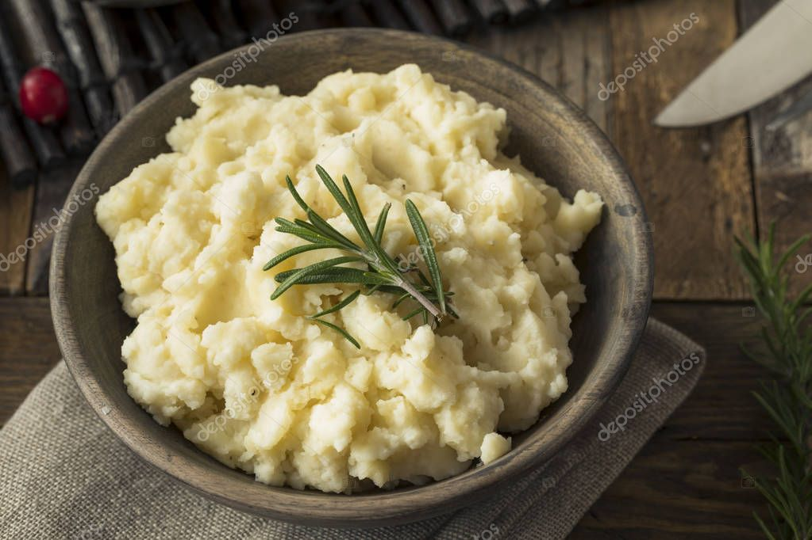

Mashed Potatoes

Description
How to cook a buttery, creamy mashed potatoes.
Ingredients
- 5 pounds potatoes
- 6 tablespoons butter
- 1 cup whole milk
- 4 ounces cream cheese
- fine sea salt
Steps
- Peel and cut potatoes into evenly sized chunks.
- Place the potatoes into a large stockpot of salted cold water and bring to a boil.
- Reduce heat to medium-high and continue cooking for about 10-12 minutes, or until a knife inserted in the middle of a potato goes in easily with almost no resistance. Carefully drain out all of the water.
- Heat the butter, milk and an additional 2 teaspoons of sea salt together either in a small saucepan or in the microwave until the butter is just melted.
- Mash the potatoes and fold in the butter mixture until just combined.